1과목: 대기오염 개론
1. 오존층에 관한 다음 설명 중 옳지 않은 것은?
2. 침강역전(subsidence inversion)에 관한 다음 설명 중 옳지 않은 것은?
3. 다음 중 대기오염물질의 분산을 예측하기 위한 바람장미(wind rose)에 관한 설명으로 가장 거리가 먼것은?
4. 최대혼합깊이(Maximum Mixing Depth , MMD)에 관한 설명으로 가장 거리가 먼것은?
5. 지구 온난화에 영향을 미치는 온실가스와 가장 거리가 먼것은?
6. 연돌에서 배출되는 연기의 형태가 아래 그림과 같은 fanning형일때 기상조건에 관한 다음 설명 중 옳지 않는 것은?
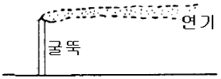
7. 기온의 연직분포가 다음 그림과 같을 때, 굴뚝에서 발생되는 연기형태는?
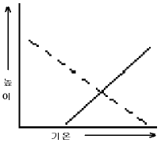
8. 다음 중 염화수소 또는 염소 발생 가능성이 가장 적은 업종은?
9. 일반 실내공기오염(indoor air pollution)물질로서 가장 거리가 먼것은?
10. 현재 대기중 이산화탄소(CO2)의 농도는?
11. 질소산화물(NOx)에 관한 다음 설명 중 옳지 않은 것은?
12. 광화학 스모그를 설명하기 위한 반응식으로 NOx의 광화학반응이 다음과 같다고 할 대, 식 ④ 의 ( )에 들어갈 생성물질만으로 옳게 나열한 것은?
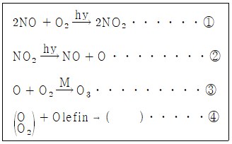
13. 대기의 수직온도 분포에 따른 각 대기권의 특징으로 옳지 않은 것은?
14. 광화학반응에 관한 다음 설명 중 옳지 않은 것은?
15. 유효굴뚝높이 100m 정도에서 확산계수가 Ky= Kz= 0.1이고, 풍속 U=5m/sec이다. 지표면에서의 대기오염농도가 최대가 되는 착지거리는 얼마인가? (단, 대기상태는 중립이며, 안정도계수(n)= 0.25이다.)
16. 60m 높이의 연돌에서 배출되는 가스의 평균온도가 250℃이고, 대기의 온도가 25℃일대, 이 굴뚝의 통풍력은? (단, 표준상태의 가스와 공기의 비중량은 1.3kg/Nm3이고 굴뚝 안에서의 마찰손실은 무시함)
17. 지표부근의 대기성분의 부피비율(농도)이 큰 것부터 순서대로 알맞게 나열 된 것은? (단, N2, O2 성분은 생략)
18. 실내공기 오염물질인 “라돈” 에 관한 설명으로 옳지 않은 것은?
19. 다음 중 황화수소의 발생과 가장 관련이 깊은 업종은?
20. 실제굴뚝높이가 50m, 굴뚝내경 5m, 배출가스의 분출속도가 12m/s, 굴뚝주위의 풍속이 4m/s라고 할때, 유효굴뚝의 높이는? (단, H = 1.5×D×(
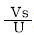
)이다.)2과목: 연소공학
21. 매연 발생에 관한 다음 설명 중 옳지 않은 것은?
22. 저위발열량이 3500kcal/Nm3인 가스 연료의 이론연소온도는 몇 ℃인가? (단, 이론연소가스량 10Nm3/Nm3,기준온도 15℃ 연료연소가스의 평균정압비열 : 0.35kcal/Nm3ㆍ℃ 공기는 예열되지 않으며, 연소가스는 해리되지 않는 것으로 한다.)
23. Thermal NOx를 대상으로 한 저 NOx 연소법으로 가장 거리가 먼것은?
24. 석유류의 비중이 커질때의 특성으로 거리가 먼 것은?
25. 중유의 원소조성은 C: 88%, H: 12%이다. 이 중유를 완전연소 시킨 결과, 중유 1kg당 건조 배가가스량이 15.8Nm3이었다면, 건조 배기가스 중의 CO2농도(V/V%)?
26. 기체연료에 관한 다음 설명으로 거리가 먼 것은?
27. 메탄의 고위발열량이 9000kcal/Sm3이라면 저위발열량(kcal/Sm3)은?
28. 프로판(C3H8)을 완전연소 하였을 때, 건연소가스 중의 CO2가 8%(V/V%)이었다. 공기 과잉계수 m은 얼마인가?
29. 3000kg 의 석탄이 완전 연소하는데 소요되는 공기량은? (단, 석탄은 모두 탄소로 구성되어 있다고 가정한다)
30. 다음 각 종 연료성분의 완전연소 시 단위 체적당 고위발열량(kcal/Sm3)의 크기 순서로 옳은 것은?
31. 유동층연소 (fluidized bed combustion) 에 관한 설명으로 가장 거리가 먼 것은?
32. 다음 중 저온부식의 원인과 대책에 관한 설명으로 가장 거리가 먼것은?
33. 연소가스 중의 수분을 측정하였더니 건조가스 1Sm3당 150g 이었다. 이 건조 가스에 대한 수증기의 용량비(V/V%)는?
34. 기체연료 중 연소하여 수분을 생성하는 H2와 CxHy연소반응의 발열량 산출식에서 아래의 480이 의미하는 것은?
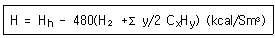
35. 액체연료의 연소장치 중 회전식 버너에 관한 설명으로 가장 거리가 먼 것은?
36. 화염이 길고, 그울음이 발생하기 쉬운 반면, 역화(back fire)의 위험이 없으며, 공기와 가스를 예열할 수 있는 연소방식은?
37. CmHn의 분자식을 가진 탄화수소가스 1Nm3을 연소 할때 소요되는 이론산소량(Nm3)은?
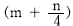
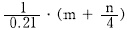
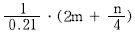
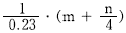
`38. 단위 연료당 이론 공기량(부피비)이 가장 큰 것은?
39. 연료유를 미립화해서 공기와 혼합하여 단시간에 완전연소를 시키는 유류연소버너가 갖추어야 할 조건으로 가장 거리가 먼 것은?
40. 착화온도에 관한 다음 설명 중 옳지 않은 것은?
3과목: 대기오염 방지기술
41. 유입구농도가 3g/Nm3,처리가스량이 2000Nm3/min인 집진장치의 처리효율이 95%라면 하루에 포집된 먼지의 양은?
42. 사이클론에 관한 설명으로 가장 거리가 먼 것은?
43. 어떤 집진장치의 입구와 출구에서 함진가스 중 분진의 농도를 측정하였더니 각각 15g/Sm3, 0.3g/Sm3이었고, 또 입구와 출구에서 측정한 분진시료 중 0-5㎛의 중량백분율이 각각 10%, 60% 이었다면 이 집진장치의 0-5㎛ 입경범위의 시료분진에 대한 부분집진율(%)은?
44. 흡착법에서 사용되는 흡착제에 관한 설명으로 옳지 않은 것은?
45. 분무탑(spray tower)에 관한 다음 설명 중 옳지 않은 것은?
46. 높이 7m, 폭 10m, 길이 15m의 중력집진장치를 이용하여 처리가스를 4m3/sec유량으로 비중이 1.5인 먼지를 처리하고 있다. 이 집진기가 포집할 수 있는 최소입자의 크기(dmin)는? ( 단, 온도는 25℃, 점성계수는 1.85×10-5kg/mㆍs이며 공기의 밀도는 무시한다)
47. 후드의 제어속도(Control Velocity)에 관한 설명으로 옳은 것은?
48. 450ppm의 NO를 함유하는 450000Nm3/h를 암모니아 선택적 접촉환원법으로 배연탈질 할때 요구되는 암모니아의 양(Nm3)은? (단, 산소가 공존되는 상태 기준임)
49. 처리용량이 크며, 분진의 크기가 0.1-0.9㎛인 것에 대해서도 높은 집진 효율을 가지며, 습식또는 건식으로도 제진할 수 있고, 압력손실이 매우 적고, 유지비도 적게 소요될 뿐 아니라 고온의 가스도 처리 가능한 집진장치는?
50. 중력식 집진장치의 집진을 향상조건에 관한 다음 설명중 옳지 않은 것은?
51. 벤츄리스크러버(venturi scrubber)에 관한 설명으로 가장 거리가 먼것은?
52. 충전탑에서 HF를 함유한 유해배출가스를 처리하고자한다. 이동단위높이 HOG=1.2m 인 탑에서 배기가스 중의 HF를 수산화나트륨 수용액에 흡수시켜 제거하는 데 유해가스제거율을 98%로 하기 위한 탑의 높이(m)는? ( 단, 이동단위수 NOG= ln
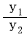
로 계산되고, y1, y2는 흡수탑입구와 출구에서의 유해가스의 몰분율이다.)53. 다음 전기집진장치 내의 입자에 작용하는 전기력 중 가장 지배적으로 작용하는 힘은?
54. 가스흡수에서는 기-액의 접촉면적을 크게 하는 것이 필요한데 실제 유효접촉면적 a(m2/m3)의 참값을 구하기가 쉽지 않으므로, 액상 총괄물질이동계수 KL과의 곱인 KLㆍa를 계수로 사용한다. 이 계수를 무엇이라 하는가?
55. 유해가스를 제거하기 위한 “연소법”에 관한 설명중 옳지 않은 것은?
56. 헨리의 법칙에 관한 다음 설명 중 옳지 않은 것은?
57. 가스중의 불화수소를 수산화나트륨용액과 향류를 접톡시켜 90%흡수시키는 충전탑의 흡수율을 99.9%로 향상시키고자 한다. 이때 충전층의 높이는? (단, 흡수액상의 불화수소의 평형분압은 0으로 한다.)
58. 유해가스 종류별 처리제 및 그 생성물과의 연결로 옳지 않은 것은?
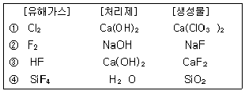
59. 염화수소의 함량이 0.85(V/V)인 배출가스 4500Sm3/hr를 수산화칼슘으로 처리하여 염화수소를 완전히 제거할 때 이론적으로 필요한 수산화칼슘의 양(kg/hr)?
60. 유량이 150m3/min 인 배출가스를 직경 20cm 인 원통형 백필터(bag filter) 40개로 처리하려고 한다. 여과속도를 1.5cm/sec로 유지하려면 백필터의 유효높이(m)는?
4과목: 대기오염 공정시험기준(방법)
61. 환경기준시험을 위한 시료채취위치 선정기준을 설명한 것 중 옳지 않은 것은?
62. 환경 대기 중 석면농도 측정에 관한 설명으로 옳지 않은 것은?
63. 소각로, 소각시설 및 그 밖의 배출원에서 배출되는 입자상 및 가스상 수은 (Hg)의 측정 분석방법 중 환원기화 원자흡광광도법에 관한 설명으로 옳지 않은 것은?
64. 굴뚝 배출가스 중 수분측정을 위하여 흡습제에 10L의 시료를 흡인하여 유입시킨 결과 흡습제의 중량 증가가 0.8500g이었다. 이 배출가스 중의 수증기 부피백분율은? (단, 건식가스미터의 흡인가스온도 : 27℃ 가스미터에서의 가스게이지압 + 대기압: 760mmHg)
65. 굴뚝에서 배출되는 가스 중의 일산화탄소를 분석하는 방법으로 옳지 않은 것은?
66. 굴뚝 배출가스 중 산소측정분석에 사용되는 화학분석법(오르자트분석법)에 관한 설명으로 옳지 않은 것은?
67. 화학반응 등에 수반하여 굴뚝 등에서 배출되는 가스중의 브롬화합물을 분석하는 방법 중 흡광광도법(티오시안 제2수은법)에 관한 설명으로 옳지 않은 것은?
68. 다음 중 아래와 같은 검량선을 가지면서 동일 조건하에 시료를 도입하여 크로마토그램을 기록하고 피크넓이(또는 피크의 높이)로부터 검량선에 따라 분석하며, 전체 측정조작을 엄밀하게 일정 조건하에서 할 필요가 있을 때 사용하는 크로마토그램 분석방법은?
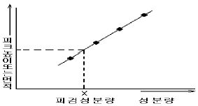
69. 굴뚝 배출가스 중의 먼지를 연속적으로 자동측정하는 광산란적분법의 장치 구성으로 가장 거리가 먼 것은?
70. 다음 굴뚝에서 배출되는 중금속 중 분석시료용액의 제조방법이 다른 하나는?
71. 환경대기 중의 탄화수소 농도를 측정하기 위한 시험방법 중 주시험법인 것은?
72. 배출허용기준 중 표준산소농도를 적용받는 항목의 오염물질 농도량 보정식으로 옳은 것은? (단, C : 오염물질 농도(mg/Sm3 또는 ppm, Ca : 실측오염물질 농도(mg/Sm3 또는 ppm, Oa : 실측산소농도(%), Os : 표준산소농도(%))
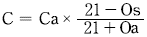
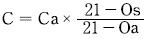
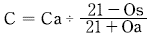
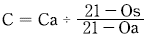
73. 환경대기 중에 있는 아황산가스 농도를 자동연속측정법으로 분석하고자 한다. 옳지 않은 것은?
74. 환경기준시험방법에 의해 대기중의 가스상 물질을 용매포집법으로 채취할 경우 채취장치의 배열 순서로 옳은 것은?
75. 굴뚝 등에서 배출되는 배출가스 중의 무기 불소화합물을 불소 이온으로 분석하는 방법에 관한 설명으로 옳지 않은 것은?
76. 다이옥신류 측정시 시료채취용 내부표준 물질로 사용되는 물질은? (단, 가스크로마토그래프/질량분석계(GC/MS)에 의한 분석방법 기준)
77. 다음 중 원자흡광광도법에 사용되는 분석장치인 것은?
78. 다음 그림은 원자흡광광도법에 의한 시료 중의 분석원소농도를 구하는 방법이다. 어떤 정량법인가?
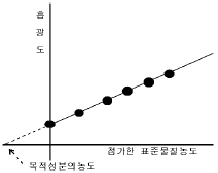
79. 어느 보일러 굴뚝내의 배출가스의 밀도가 1.2kg/m3이고, 피토우관에서의 동압이0.2inH2O일때, 굴뚝 배출가스의 유속은? (단, 피토우관 계수 : 0.84)
80. 다음 가스크로마토 그래프의 장치구성 중 가열장치가 피룡한 부분과 그 이유로 옳게 연결된 것은?
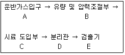
5과목: 대기환경관계법규
81. 다음은 대기오염경보단계중 “주의보” 발령기준에 관한 사항이다. ( )안에 알맞은 것은?
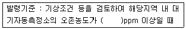
82. 대기환경보전법규상 대기오염 배출시설로부터 배출되는 오염물질을 배출허용기준 이하로 배출하기 위하여 설치하는 대기오염 방지시설로 가장 적합한 것은)?단, 방지시설에는 오염물질을 포집 및 이송을 위한 부대기계ㆍ기구류 등을 포함한다.)
83. 대기환경보전법령에 의거, 환경기술인을 바꾸어 임명할 경우 그 사유가 발생한 날로 최대 며칠이내에 신고하여 하는가?
84. 배출시설 가동시에 방지시설을 가동하지 아니하거나 오염도를 낮추기 위하여 배출시설에서 배출되는 오염물질에 공기를 섞어 배출하는 행위에 대한 1차 행정처분 기준은?
85. 대기환경규제지역을 관할하는 시ㆍ도지사는 당해 지역이 대기환경규제지역으로 지정ㆍ고시된 후 최대 몇 년 이내에 당해 지역의 환경기준을 달성ㆍ유지하기 위한 계획을 수립ㆍ시행 하여야 하는가?
86. 자가방지시설을 설계시공하고자 하는 경우, 시ㆍ도지사에게 제출해야 되는 서류로 가장 거리가 먼 것은?
87. 대기환경보전법규에 명시된 환경기술인의 교육사항에 관한 규정 중 ( )안에 들어갈 말로 옳은 것은?
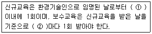
88. 악취방지법규에 의거 악취배출시설의 변경신고를 하영야 하는 경우로 가장 거리가 먼 것은?
89. 대기환경보전법상 용어의 정의로 옳지 않은 것은?
90. 악취방지법에 의거 환경부령이 정하는 악취를 발생시키는 물질을 불법 소각한 자에 대한 벌칙기준은?
91. 대기환경보전법규에 의한 자가측정대상ㆍ항목 및 방법에 대한 기준으로 옳지 않은 것은?
92. 환경정책기본법상 시ㆍ도지사가 지역환경의 특수성을 고려하여 규정에 의한 기준보다 확대ㆍ강화된 별도의 환경기준을 설정할 경우, 누구에게 보고하여야 하는가?
93. 대기배출시설 설치허가를 받은 A사업장에서 먼지 30톤/년, 질소산화물 40톤/년, 일산화탄소 20톤/년의 대기오염물질이 발생된다면, 사업장 분류기준으로는 몇 종에 해당하는가?
94. 대기환경보전법상에 규정된 첨가제가 아닌 것은?
95. 다중이용시설 등의 실내공기질 관리법령상 대통령령이 정하는 규모의 다중이용시설에 해당되지 않는 것은?
96. 대기환경보전법령상 법규정에 의한 개선명령을 받지 아니한 사업자가환경부 장관에게 개선계획서를 제출하고 배출허용기준을 초과하여 오염물질을 배출할 수 있는 경우가 아닌것은?
97. 환경부장관이 사업자에게 배출시설 및 방지시설의 부적정 운영으로 인하여 조치명령을 하는 경우, 정하는개선기간의 최대 범위는? (단, 연장기간 제외)
98. 대기환경보전법 시행령에 규정된 사업장별 환경기술인의 자격기준으로 옳지 않은 것은?
99. 환경정책기본법령상 대기환경기준으로 옳지 않은 것은?
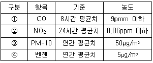
100. 다음은 대기환경보전법규에 규정된 현재 제작자동차의 배출가스 보증기간에 관한 사항이다. ( )안에 알맞은 것은?
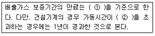